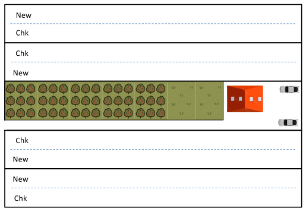
2 Il disegno degli esperimenti di campo
Nature will best respond to a logical and carefully thought out questionnaire (Ronald Fisher)
Nel capitolo precedente abbiamo visto che ogni esperimento, per essere valido, deve conformarsi a tre principi di base, cioè controllo, replicazione e randomizzazione; a questo punto dobbiamo chederci come sia possibile tradurre questi principi in scelte progettuali adeguate a produrre esperimenti validi in campo. L’insieme dei metodi per condurre esperimenti corretti è detto ‘Disegno sperimentale’; ovviamente non esiste un protocollo unico per tutte le discipline scientifiche nel settore agrario, è possibile dare alcune indicazioni generali, applicabili per tutti gli esperimenti di campo. Preliminarmente, è utile distinguere tra:
- prove parcellari
- prove dimostrative aziendali
Le prove parcellari sono eseguite in campo, su unità sperimentali (parcelle) sufficientemente piccole da consentire un elevato grado di precisione e di controllo, con l’impiego di attrezzature parcellari in grado di riprodurre l’operatività delle attrezzature aziendali, ma su scala ridotta e adeguata all’impiego su piccole superfici. Grazie all’elevato livello di controllo, i risultati degli esperimenti parcellari sono generalmente molto precisi e realistici, sebbene le condizioni di crescita possano essere estremamente favorevoli alla coltura, consentendo livelli di resa fino al 10-30% in più, rispetto a quelli ottenibili in un’azienda agraria.
Le prove dimostrative in azienda rappresentano, invece, la fase finale della ricerca e vengono solitamente condotte per validare o dimostrare l’efficacia di nuove pratiche e tecnologie a livello aziendale, in condizioni di gestione realistiche, utilizzando le attrezzature e le risorse normalmente a disposizione delle aziende agrarie del circondario.
2.1 Trattamenti e repliche
Partiamo dal presupposto che un’accurata ricerca bibliografica preliminare abbia suggerito ipotesi e obiettivi di ricerca ragionevoli ed abbia quindi portato alla definizione di un certo numero di trattamenti sperimentali da includere in prova. Per gli esperimenti parcellari, quel numero va da 2 a 20, sebbene alcuni progetti di ricerca, come i programmi di miglioramento genetico nelle loro fasi iniziali, possano richiedere un numero di trattamenti (accessione) molto più elevato. Il numero di repliche è generalmente compreso tra 3 e 5; un numero inferiore non è consigliabile, perché l’esperimento diventa molto inefficiente, mentre un numero superiore è altrettanto inadeguato, perché aumentano i tempi e i costi della ricerca, mentre la precisione tende a diminuire, poiché l’esperimento diventa molto grande.
Per le prove dimostrative, il numero di trattamenti è, di solito, basso e, il più delle volte, è pari a due: una pratica agronomica innovativa (in relazione, ad esempio, a gestione delle colture, semina, protezione, fertilizzazione…) contro un testimone di riferimento. Tale coppia (la nuova pratica di gestione e il testimone) viene replicata per un un minimo di tre volte (ma quattro è sicuramente meglio), per misurare la variabilità di risposta all’interno del campo.
Sia per le prove parcellari che per quelle dimostrative, il numero di unità sperimentali (parcelle) necessarie si ottiene semplicemente moltiplicando il numero di trattamenti per il numero di repliche.
2.2 Scegliere il campo
Una volta definita la tipologia di esperimento che si intende condurre, la scelta di un campo adeguato risulta essere un ingrediente fondamentale per un esperimento di successo. Un campo sperimentale dovrebbe essere:
- sufficientemente vicino a strade, laboratori e altre infrastrutture, in modo da consentire un’esecuzione tempestiva dei campionamenti e delle misurazioni;
- il più omogeneo possibile in termini di tipologia di suolo, drenaggio, pendenza, colture precedenti e altre caratteristiche (vedi anche Capitolo 1);
- caratterizzato da una storia agronomica nota ed adeguata agli scopi della ricerca.
La storia del terreno è di fondamentale importanza, poiché determina, ad esempio, il livello di fertilità e la presenza/assenza di parassiti, patogeni e specie infestanti. Ad esempio, se dobbiamo condurre un esperimento di fertilizzazione azotata, è preferibile evitare un campo che nella stagione precedente abbia ospitato erba medica o altre leguminose, a causa di un possibile eccesso di azoto residuo nel terreno. Allo stesso modo, se dobbiamo condurre un esperimento con erbicidi, è preferibile evitare un campo che nella stagione precedente abbia ospitato un altro esperimento di diserbo, poiché la dispersione dei semi nei testimoni non trattati e nelle parcelle trattate con erbicidi di bassa efficacia potrebbe aver creato livelli di infestazione non uniformi.
Oltre a scegliere correttamente l’appezzamento, è importante anche porre in atto alcune operazioni preliminari che consentano di migliorare l’omogeneità del campo o della coltura. Ad esempio, talvolta si usa far precedere la prova da una coltura come l’avena, che è molto avida di azoto e lascia nel terreno poca fertilità residua. Oppure, si può impiantare un prato di erba medica, che, grazie agli sfalci periodici, lascia il terreno libero da piante infestanti. Un’altra tecnica molto usata è quella di seminare a densità più alte del normale e poi diradare, per assicurare una migliore uniformità d’impianto.
2.3 Dimensione e forma delle parcelle
Abbiamo già accennato nel capitolo precedente che l’unità sperimentale per un esperimento in campo è la cosiddetta parcella. Nel caso di esperimenti dimostrativi, essa è solitamente molto lunga e rettangolare, a forma di striscia, sufficientemente grande da consentire il passaggio delle comuni macchine agricole (aratro, seminatrici, irroratrici, mietitrebbia e così via) in uno o più passaggi. Talvolta, la parcella può anche coincidere con un campo, cosicché l’esperimento consiste di diversi campi, uno accanto all’altro. Ad esempio, la Figura Figure 2.1 mostra un esperimento dimostrativo con quattro campi, due strisce per campo e l’assegnazione casuale dei due trattamenti alle due strisce all’interno di ciascun campo.
Nel caso delle prove parcellari, le parcelle hanno, di solito, forma rettangolare, con una larghezza pari a un multiplo della larghezza delle macchine seminatrici/irroratrici/raccoglitrici (Fig. Figure 2.2) ed una lunghezza appositamente scelta per ottenere una superficie tale da ospitare un numero di piante sufficientemente elevato, ad esempio almeno 20-40 m2 per colture a bassa fittezza (es. mais) e 10-20 m2 per colture ad alta fittezza (es. grano o erba medica). Parcelle più piccole potrebbero non produrre risultati rappresentativi, ma, a meno che non si tratti di un esperimento dimostrativo, anche parcelle più grandi possono essere svantaggiose, poiché aumenta la variabilità tra le parcelle. Se si dispone di un campo di grandi dimensioni, si potrebbe preferire aumentare il numero di repliche, anziché aumentare la dimensione delle parcelle.
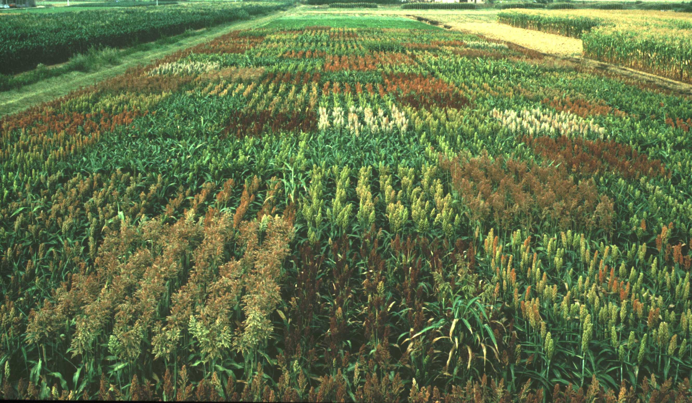
Nello stabilire la dimensione delle parcelle, dovremo tener conto del fatto che la parte più delicata è il bordo, in quanto le piante che si trovano lungo di esso risentono di condizioni diverse dalle altre piante situate al centro della parcella (effetto bordo). Questa variabilità dovrebbe essere minimizzata, utilizzando, per i rilievi e la raccolta, solo la parte centrale di ogni parcella, creando così un netta distinzione tra la superficie totale e la superficie utile, che può essere anche molto minore di quella totale.
2.4 La mappa di campo
nce the number and characteristics of the plots have been determined, the next step is to draw the so-called . Dopo avere definito il numero e le caratteristiche delle parcelle, il passo successivo è la redazione della mappa dell’esperimento. Un esempio è riportato in Figura 2.3, dove vediamo un esperimento collocato in un appezzamento largo 30 metri e lungo 400 metri e consistente in una griglia di parcelle con otto colonne e quattro righe. Ogni parcella ha dimensioni di otto metri di larghezza per otto metri di lunghezza ed intorno all’esperimento è stato aggiunta una ‘cornice’ di parcelle aggiuntive, finalizzate a ridurre l’effetto ‘bordo’. Vediamo in figura che la mappa riporta tutte le informazioni che consentono di collocare correttamente l’esperimento nello spazio ed, inoltre, che le parcelle sono tutte chiaramente identificate con un codice numerico.
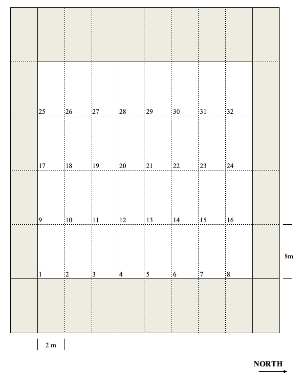
2.5 Il layout sperimentale
Come accennato in precedenza, gli esperimenti di campo sono ‘manipolativa’, e prevedono l’allocazione dei trattamenti, che deve avvenire utilizzando criteri di randomizzazione ben definiti. Sulla base di questi criteri distinguiamo diverse tipologie di layout sperimentali, che saranno presentate nelle sezioni seguenti.
2.5.1 Disegni completamente randomizzati (CRD)
Per queste prove, le più semplici, la scelta dei soggetti da trattare è totalmente casuale, senza vincoli di sorta. Il vantaggio principale è la semplicità; lo svantaggio sta nel fatto che le eventuali fonti sistematiche di variabilità vengono ignorate e possono essere confuse con l’effetto del trattamento. Ad esempio, mostriamo la griglia di Figura 2.3, utilizzata per l’allocazione casuale di 8 trattamenti (identificati con le lettere da A ad H) con quattro repliche. Il disegno è totalmente corretto, ma se, per qualche motivo di cui non ci rendiamo conto, le prime tre colonne di parcelle nella Figura 2.4 (parcelle 1, 2, 3, 9, 10, 11, 17, 18, 19, 25, 26 e 27) fossero in una condizione di minor fertilità sensu latu, o per la presenza di un gradiente intrinseco nel suolo, o per intrusioni sistematiche, come attacchi parassitari o di altre avversità, il trattamento G sarebbe penalizzato, perché tre delle quattro repliche si troverebbero nella parte meno fertile, mentre il trattamento H sarebbe favorito, perché solo una replica si troverebbe nella parte meno fertile.
Per questo motivo, i disegni sperimentali a blocchi randomizzati completi (CRD) sono molto comuni negli esperimenti di laboratorio o in serra, o ovunque le condizioni ambientali siano altamente uniformi, mentre sono relativamente rari negli esperimenti in campo.
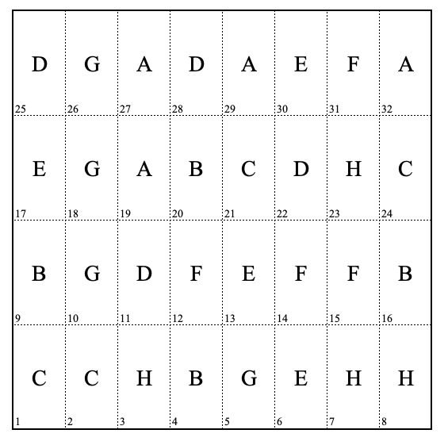
2.5.2 Disegni a blocchi randomizzati (CRBD)
Nei disegni sperimentali a blocchi randomizzati completi (RCBD), le unità sperimentali sono suddivise in gruppi omogenei, ognuno dei quali contiene un numero di soggetti pari al numero dei trattamenti. Per gli esperimenti in campo, le parcelle vengono raggruppate in base a possibili gradienti di fertilità; ad esempio, se ci aspettassimo un gradiente di fertilità dal basso verso l’alto per le parcelle nella Figura Figure 2.3, potremmo dividere l’esperimento in quattro blocchi con una riga ciascuno (8 parcelle per blocco e il blocco 1 conterrebbe, ad esempio, le parcelle da 1 a 9). Successivamente, potremmo assegnare casualmente gli otto trattamenti alle parcelle in ciascun blocco, in modo che ci sia una replica per blocco e, quindi, nessun trattamento venga penalizzato o favorito (Fig. Figure 2.5).
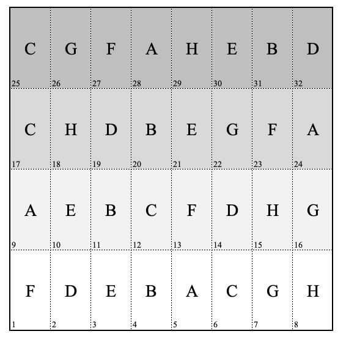
I blocchi sono normalmente disposti lungo il gradiente di fertilità principale, in modo che le parcelle di ciascun blocco si trovino nella stessa posizione del gradiente. Ad esempio, se abbiamo un gradiente di fertilità da sinistra a destra e dobbiamo progettare un esperimento in una griglia 4 × 8, come mostrato nella Figura Figure 2.3, potremmo prendere quattro blocchi verticali con due colonne ciascuno (il blocco 1 conterrebbe, ad esempio, le parcelle 1, 2, 9, 10, 17, 18, 25, 26; Fig. Figure 2.6, a sinistra). Tuttavia, con questa disposizione, le parcelle all’interno di ciascun blocco non sarebbero tutte nella stessa posizione del gradiente, il che aumenterebbe il livello di variabilità non spiegata all’interno di ciascun blocco. Un’alternativa per gestire meglio un eventuale gradiente di fertilità da sinistra a destra sarebbe quella di impostare l’esperimento su una griglia 8 × 4, con quattro blocchi verticali di una colonna ciascuno (Fig. 2.6, a destra), sebbene con tale disposizione l’esperimento divenga molto lungo (64 m), aumentando il rischio di includere parti di campo non omogenee.
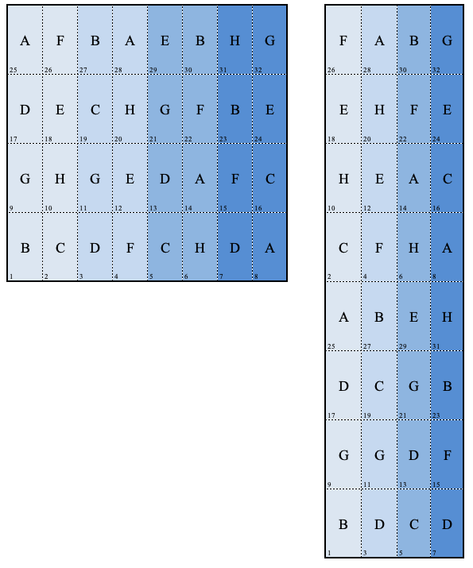
Il disegno sperimentale a blocchi randomizzati completi (RCBD) è il disegno più comune per gli esperimenti sul campo, ma può essere utilizzato anche per altri tipi di esperimenti, dovunque le unità sperimentali possano essere raggruppate in base a qualche proprietà intrinseca, come età, sesso o prossimità spaziale. Si tratta di un layout sperimentale molto comune ed anche piuttosto efficiente, preferibile al CRD ogni qualvolta vi siano differenze rilevanti tra gruppi di soggetti sperimentali, in base ad un criterio di classificazione.
2.5.3 Disegni a quadrato latino (LS)
I disegni a blocchi randomizzati permettono di tener conto di un eventale criterio di raggruppamento tra le unità sperimentali, ad esempio un gradiente di fertilità del suolo. Se le unità sperimentali presentano disomogeneità in relazione a due criteri, o se vi sono due ‘gradienti’ di fertilità, è possibile utilizzare un layout a quadrato latino. La Figura 2.7 mostra un esempio con quattro trattamenti e altrettante repliche, nel quale ogni trattamento si trova in tutte le righe e tutte le colonne, in modo da poter considerare eventuali gradienti di fertilità da destra verso sinistra e dall’alto verso il basso. La figura mostra anche perché si parli di quadrato latino: in effetti il numero di righe è uguale al numero di colonne, secondo una griglia quadrata. Qualcuno di voi riconoscerà in questo schema i principi di fondo del Sudoku.
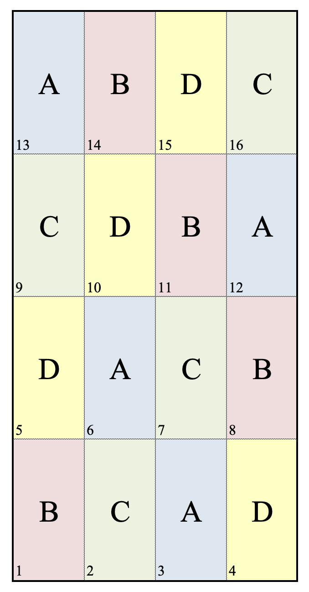
I disegni a quadrato latino non sono solo utili per gli esperimenti di pieno campo, ma possono essere utilizzati anche in altri ambiti di ricerca; lo svantaggio principale sta nel fatto che, dovendo avere tante repliche quanti sono i trattamenti, è utilizzabile solo per esperimenti abbastanza piccoli, con meno di 4-5 trattamenti, per evitare che il numero di repliche diventi inaccettabilmente alto.
2.5.4 Disegni a split-plot e strip-plot
Gli esperimenti fattoriali possono essere disegnati con uno schema a randomizzazione completa o a blocchi randomizzati, allocando alle unità sperimentali tutte le combinazioni dei fattori in studio. Per esempio, consideriamo un esperimento per confrontare tre tipi di lavorazioni del terreno (minimum tillage = MIN; aratura superficiale = SP; aratura profonda = DP) e due tipi di controllo chimico delle piante infestanti (a pieno campo = TOT; lungo la fila = PART). Se vogliamo fare quattro repliche, i sei trattamenti sperimentali (MIN-TOT, SP-TOT, DP-TOT, MIN-PART, SP-PART and DP-PART) possono essere allocati alle 24 parcelle secondo uno schema a blocchi randomizzati, come indicato in Figura Figure 2.8. In questo caso è necessario lasciare un ampio spazio tra le parcelle, in modo da permettere la circolazione delle macchine operatrici per la lavorazione ed, inoltre, le parcelle debbono essere grandi, per consentire una buona esecuzione dell’aratura.
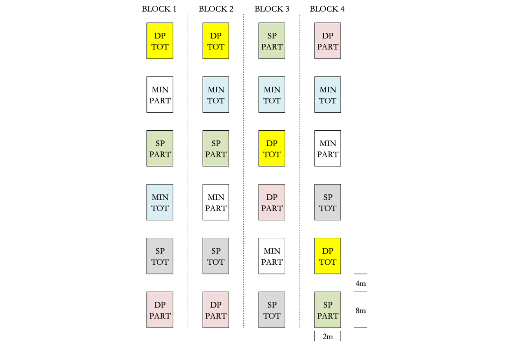
Dato che il trattamento di diserbo non richiede parcelle altrettanto grosse, potremmo pensare di suddividere ogni parcella in due sub-parcelle, sulle quali allocare il trattamento di diserbo (disegno a parcella suddivisa o split-plot). Un esempio è riportato in Figura 2.9, dove possiamo osservare che le lavorazioni sono allocate su 12 parcelle principali (main-plots), secondo uno schema a blocchi randomizzati, mentre i trattamenti di diserbo sono allocati in modo randomizzato sulle due sub-plots in ogni main-plot. Tecnicamente, diciamo che la lavorazione è il fattore di primo ordine, mentre il diserbo chimico è il fattore di secondo ordine; l’esperimento assume così dimensioni inferiori ed è quindi più preciso.
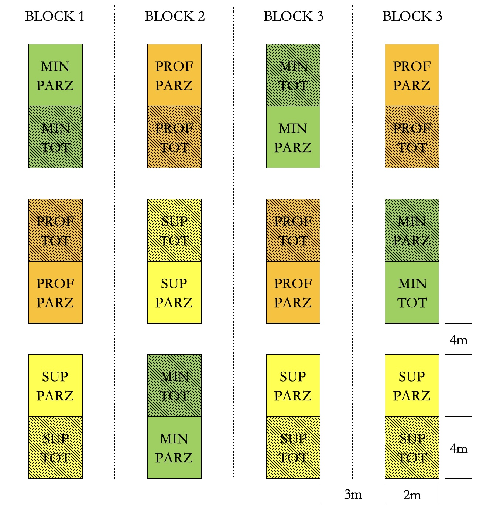
In generale, un disegno a split-plot può rendersi necessario per i seguenti motivi:
- un fattore sperimentale richiede parcelle più grandi dell’altro. Di conseguenza si disegna l’esperimento per il fattore che richiede parcelle più grandi, che vengono poi suddivise per accomodare l’altro fattore sperimentale.
- Uno dei due fattori sperimentali è più ‘difficile’ da assegnare rispetto all’altro e quindi è preferibile manipolare congiuntamente tutto il gruppo di unità sperimentali che deve riceverlo. Ad esempio, se vogliamo misurare la resistenza alla corrosione di barre d’acciaio con diversi rivestimenti e forgiate a diverse temperature, è evidente che la gestione della temperatura nella fornace è piuttosto complessa, perché richiede tempi lunghi per essere cambiata e raggiungere un nuovo equilibrio. Invece che preparare una fornace per ogni rivestimento (manipolazione indipendente delle unità sperimentali), si mettono nella stessa fornace tutte le unità sperimentali con i diversi rivestimenti. Una situazione analoga si può avere se vogliamo provare diverse miscele per torte (con vari ingredienti), e diversi tempi di cottura; dato che non è agevole preparare una miscela diversa per ogni tempo di cottura, potremmo preparare una miscela tutta insieme, per poi suddividerla tra i diversi tempi di cottura.
- La disponibilità di unità sperimentali è limitata, come accade con gli armadi climatici, che vengono impostati a diversa temperatura e all’interno delle quali vengono randomizzate le tesi sperimentali di secondo ordine.
Un’importante conseguenza dei disegni a split-plot è che ogni mainplot funge da replica per il fattore sperimentale di secondo ordine. In effetti, se guardiamo alla Figura Figure 2.9, possiamo osservare che ci sono quattro repliche per ogni lavorazione, ma 12 repliche (12 sub-plots) per ogni tipo di diserbo chimico. Di conseguenza, l’effetto del fattore sperimentale di secondo ordine è stimato con maggior precisione.
Un’utile variante dello split-plot può trovare applicazione in alcune circostanze, soprattutto nelle prove di diserbo chimico e prevede di allocare i trattamenti in ‘striscie’ composte da più parcelle (strip-plot). Un esempio è riportato nella Figura 2.10, dove quattro colture sono state seminate 40 giorni dopo due trattamenti erbicidi, per determinare i possibili effetti fitotossici dovuti alla presenza di residui nel terreno (esperimento di recropping). Ogni blocco è organizzato in tre righe e quattro colonne; le quattro colture sono state allocate casualmente ad una colonna ciascuna, mentre le tesi erbicide (incluso il controllo non trattato) sono state allocate casualmente ad una riga ciascuna. Le combinazioni dei due fattori sperimentali risultano, di conseguenza, assegnate alle sub-parcelle. In questo disegno sperimentale, abbiamo tre tipi di parcelle: le righe, le colonne e le sub-parcelle, con il vantaggio che le operazioni di trattamento in campo possono essere effettuate in modo rapido ed efficace.
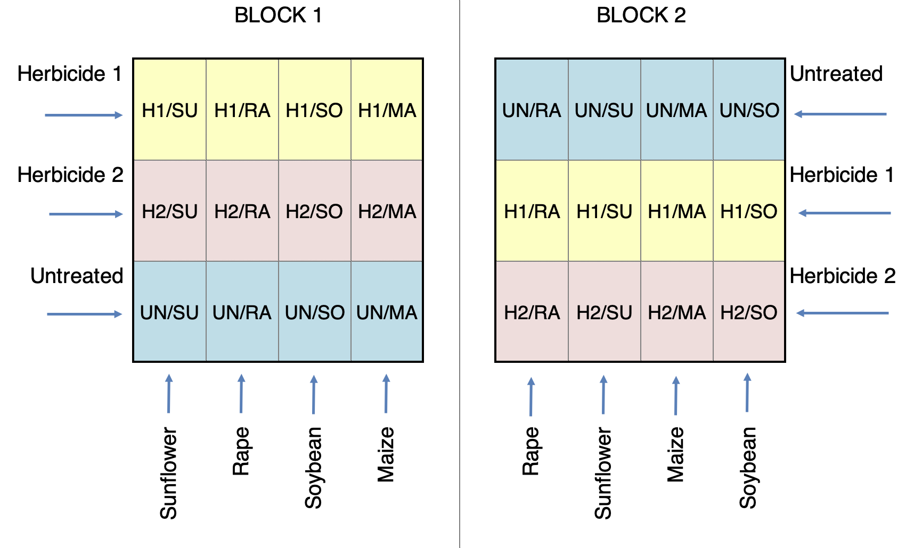
2.5.5 Disegni con sub-sampling
Sebbene le pseudo-repliche non possano sostituire le repliche vere, esse possono essere associate a quest’ultime nei disegni sperimentali con sub-sampling che sono veramente molto comuni. Ad esempio, se vogliamo determinare l’abbondanza delle piante infestanti, è possibile utilizzare, in ogni parcella, diversi ‘quadrati’, all’interno dei quali effettuare i conteggi o le determinazioni della biomassa Colbach et al. (2000), come mostrato in Figura 2.11. Come accennato nel Capitolo 1, prelevare sub-campioni da un esperimento valido con repliche vere è una buona pratica, perchè permette di ottenere una maggiore precisione, ma è necessario non confondere repliche vere e sub-repliche in fase di analisi dei dati, poiché le due variabilità (quella tra repliche vere e tra sub-repliche) possono essere diverse e fornire informazioni diverse. Ad esempio, negli esperimenti che prevedono determinazioni chimiche, è consuetudine prelevare diversi sottocampioni, ad esempio, dalla granella raccolta in ciascuna parcella, e sottoporli a diverse misurazioni; in questo caso, la variabilità tra repliche vere rappresenta una stima affidabile dell’intero errore sperimentale, mentre la variabilità dei sottocampioni è solitamente inferiore e fornisce solo una stima affidabile degli errori commessi durante la fase di analisi chimica.
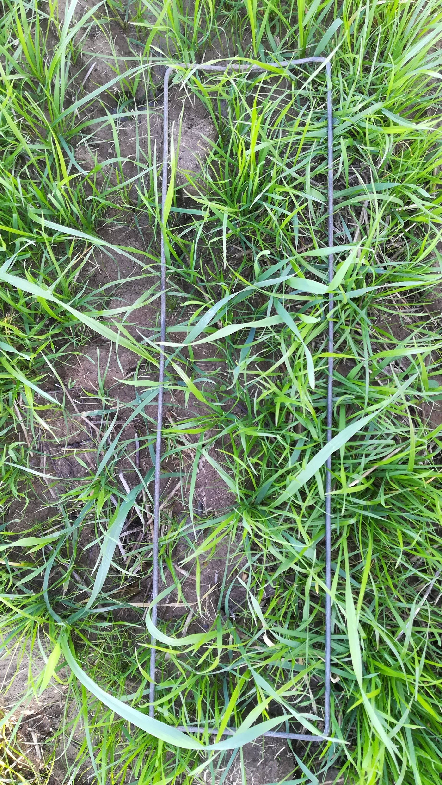
2.5.6 Misure ripetute
Uno schema sperimentale a misure ripetute è simile a uno split-plot in quanto prevede (almeno) due gruppi di fattori: quello/quelli che viene/vengono assegnato/i alle parcelle, più il fattore ripetuto, che consiste nell’effettuare misurazioni multiple in ciascuna parcella, in momenti diversi (ad esempio, fasi fenologiche, stagioni, anni…) o in posizioni diverse (ad esempio, profondità, organi della pianta, posizioni della chioma…). Il fattore ripetuto è analogo al sub-plot factor di un disegno a split-plot, con l’importante differenza che i suoi livelli non sono e non possono essere randomizzato, ma sono allocati in ordine sistematico (ad esempio, in base alla scala temporale o spaziale). Quando il fattore ripetuto è il tempo, un disegno a misure ripetute viene spesso definito split-plot in time (Fig. 2.12).
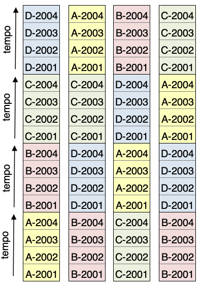
2.6 Disegni sperimentali dubbi o errati
I disegni sperimentali presentati nella sezione precedente sono formalmente corretti e sono comunemente utilizzati nella ricerca di campo in agricoltura e biologia. Tuttavia, per soddisfare i requisiti dettati dalla disponibilità di manodopera, tempo e denaro, si adotta spesso un certo grado di flessibilità nella randomizzazione. A questo proposito, una raccomandazione ragionevole è sempre quella di progettare esperimenti formalmente corretti, a meno che l’esperienza e il buon senso non suggeriscano che alcune lievi semplificazioni possano permettere di aumentare la fattibilità e ridurre i costi, senza compromettere la precisione e l’accuratezza, il che, bisogna dire, avviene piuttosto di rado.
2.6.1 Esempio 2.1
Per misurare la concentrazione residua di due erbicidi nel terreno 20 giorni dopo il trattamento, è necessario pianificare un esperimento con repliche vere, trattate in modo indipendente e casuale con i due erbicidi, come mostrato in M1 (CRD) o M2 (RCBD) in Figura Figure 2.13. Il disegno sperimentale può essere ulteriormente migliorato prelevando più sub-campioni in ciascuna parcella e/o sottoponendo ciascun campione o sub-campione a più determinazioni chimiche (disegno con sub-sampling). Talvolta, un esperimento di questo tipo viene semplificato, ad esempio, (i) trattando due sole parcelle (una per erbicida), raccogliendo un campione di terreno per parcella ed effettuando, per ciascun campione, tre determinazioni chimiche; (ii) trattando due sole parcelle (una per erbicida), raccogliendo quattro campioni di terreno per parcella ed effettuando, per ciascun campione, un’unica determinazione chimica; (iii) trattando due sole parcelle (una per erbicida), raccolgiendo quattro campioni di terreno per parcella ed effettuando, per ogni campione, tre determinazioni chimiche. In teoria, nessuna di queste semplificazioni è valida per mancanza di repliche vere; nel caso (i) la situazione è quella mostrata in M3 (Fig. 2.13): non ci sono repliche e le tre determinazioni chimiche possono solo fornire una stima dei possibili errori commessi durante la fase di analisi chimica, mentre tutte le altre potenziali fonti di errore casuale sono trascurate (nel linguaggio comune, queste pseudo-repliche sono spesso chiamate repliche “tecniche”, in contrapposizione alle repliche “biologiche”). Nei casi (ii) e (iii), la situazione è simile a quella mostrata in M4 (Fig. 2.13): abbiamo repliche biologiche (i tre sottocampioni di suolo), ma i trattamenti non sono assegnati in modo indipendente ad esse, e non importa quante determinazioni chimiche vengono eseguite in ogni campione.
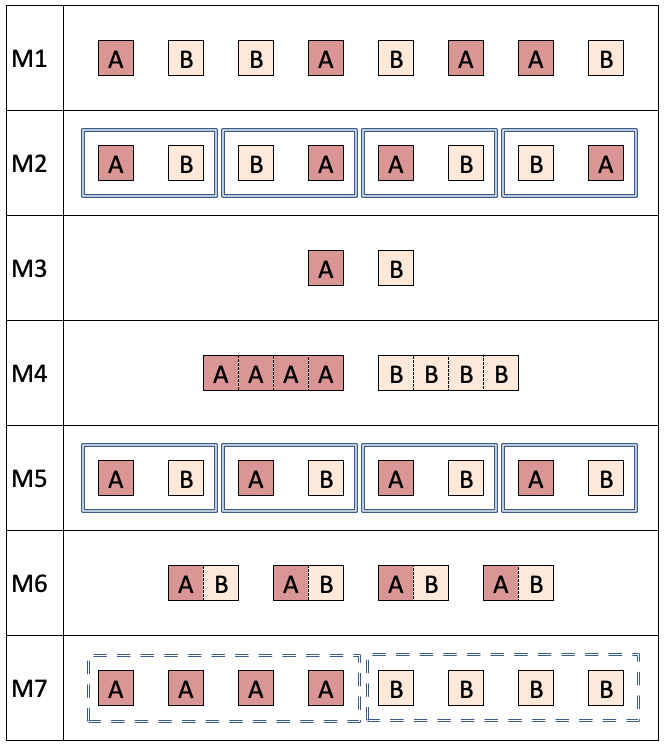
2.6.2 Esempio 2.2
Per confrontare la crescita iniziale di sedici genotipi, è stato progettato un esperimento in vaso in cella climatica, utilizzando diversi ripiani come blocchi, per tenere conto delle possibili differenze tra un ripiano e l’altro. All’interno di ciascun ripiano, i sedici genotipi sono stati disposti in ordine casuale (RCBD). Questo disegno sperimentale, formalmente corretto, viene spesso semplificato posizionando i genotipi su ciascun ripiano in ordine sistematico, seguendo la stessa sequenza da sinistra a destra, il che è spesso motivato da una valutazione visiva più efficace delle differenze tra i genotipi. Una disposizione sistematica di questo tipo è simile a quella illustrata in M5 (Fig. 2.13), ed è sconsigliata, sia per esperimenti condotti in condizioni controllate sia, soprattutto, per gli esperimenti di campo, poiché qualsiasi possibile gradiente ambientale da sinistra a destra potrebbe essere facilmente confuso con l’effetto del trattamento.
2.6.3 Esempio 2.3
Se intendessimo studiare l’influenza della posizione dei rami sulla fotosintesi di una specie arborea, potremmo pianificare un esperimento completamente randomizzato, con otto alberi; su quattro di questi, scelti a caso, potremmo misurare la fotosintesi nei rami bassi, mentre sui rimanenti quattro alberi potremmo fare le stesse misure, ma considerando i rami alti (come in M1, Fig. 2.13). Questo disegno sperimentale può essere semplificato considerando quattro alberi invece di otto, misurando, per ciascuno di essi, la fotosintesi sia nei rami bassi che in quelli alti, secondo un tipico disegno a misure ripetute (vedi M6 in Fig. 2.13), il che potrebbe essere vantaggioso per un miglior controllo degli errori sperimentali.
2.6.4 Esempio 2.4
Intendiamo confrontare due sistemi di irrigazione (a pioggia e localizzata) utilizzando quattro campi in ognuna di due aziende agricole vicine tra loro. Un modo corretto per impostare un esperimento di questo tipo è utilizzare, in ciascuna azienda, un disegno sperimentale a blocchi randomizzati completi (RCBD) con due blocchi di due campi ciascuno (RCBD ripetuto in due località). Una notevole semplificazione potrebbe essere ottenuta utilizzando i quattro campi della prima azienda per allocare il trattamento di irrigazione a pioggia e i quattro campi dell’altra azienda per allocare il trattamento di irrigazione localizzata, come mostrato in M7 (Fig. 2.13). Tuttavia, questa semplificazione produrrebbe un disegno sperimentale invalido, perché i due trattamenti non sarebbero interspersi, ma segregati, in modo che l’effetto dell’irrigazione sarebbe completamente confuso con l’effetto dell’azienda (effetto ‘località’). In altre parole, qualsiasi differenza tra le due aziende agricole, preesistente (ad esempio, storia agronomica, tipo di suolo o ambiente) o prodotta da qualsiasi tipo di intrusione (ad esempio, un attacco di parassiti in una delle due località), potrebbe essere erroneamente attribuita all’effetto dell’irrigazione.
In generale, la mancanza di interspersione (segregazione) è uno dei principali casi di randomizzazione errata e si verifica quando vi sia una separazione spaziale o temporale tra i livelli dei trattamenti sperimentali. Un disegno di questo tipo può essere considerato valido solo per saggiare l’effetto località, non quello del trattamento. Ad esempio, se vogliamo valutare la differenza di produzione di un genotipo in due località, coltivare questo genotipo in quattro campi di una località e in quattro campi dell’altra sarebbe considerato del tutto corretto.
2.6.5 Esempio 2.5
Intendiamo confrontare due sistemi di irrigazione (a pioggia e localizzata) utilizzando otto filari di un frutteto e, a questo fine, decidiamo di allocare in modo casuale i due sistemi di irrigazione agli otto filari (quattro filari per sistema). Questo disegno pienamente corretto potrebbe essere semplificato allocando il primo sistema d’irrigazione ai primi quattro filari contigui, ed il secondo sistema d’irrigazione ai restanti quattro filari contigui, introducendo così una forma di segregazione spaziale tra i due livelli del trattamento, come già osservato nell’Esempio 2.4. In linea di principio, tale semplificazione sarebbe errata (mancanza di interspersione) e l’esperimento dovrebbe essere considerato invalido. In pratica, le conseguenze di tale segregazione dovrebbero essere molto meno gravi rispetto all’esempio precedente, poiché i due blocchi di quattro file sono molto vicini tra loro e l’insorgenza di effetti di confusione legati alla posizione dei filari può essere considerata alquanto improbabile. Sebbene questo tipo di segregazione sia considerato accettabile in alcune discipline, è consigliabile, per quanto possibile, evitarla, poiché l’interspersione dei trattamenti è una salvaguardia fondamentale contro risultati errati.
2.7 Ulteriori sviluppi
I layout sperimentali presentati in questo capitolo sono i più comuni negli esperimenti in campo, sebbene esistano diverse altre possibilità per soddisfare le esigenze specifiche di ogni disciplina e, in particolare, per ridurre la dimensione dei blocchi e la variabilità intra-blocco, nel caso di esperimenti con un numero molto elevato di trattamenti. A questo proposito, i disegni a blocchi incompleti bilanciati o altri tipi di disegni a blocchi incompleti (ad esempio, disegni a righe e colonne, parzialmente bilanciati e a reticolo) possono rivelarsi utili in alcuni casi. Essi sono descritti, ad esempio, in Kuehl (2000), Le Clerg et al. (1962) e Cochran and Cox (1950). Soprattutto per questi disegni complessi, l’ausilio di un sistema informatico, come il package R agricolae, può essere vantaggioso per eseguire le randomizzazioni in modo semplice ed appropriato de Mendiburu (2023).
È inoltre necessario menzionare alcuni approcci relativamente recenti per tenere conto della variabilità del suolo negli esperimenti su piccole parcelle, come i “disegni spaziali” (Richter et al. 2014) e il metodo nearest neighbor (Mohanty 2001), che sono troppo avanzati per le finalità di questo testo.
Infine, è importante ricordare che i risultati degli esperimenti in campo devono sempre essere confermati in altri anni o località. Per questi progetti multi-ambiente, il disegno sperimentale (trattamenti e repliche) è solitamente lo stesso, ma la randomizzazione deve essere sempre eseguita in modo indipendente negli anni, nelle località o nelle prove successive.
2.8 Domande ed esercizi
- Elenca e discuti le principali caratteristiche delle parcelle sperimentali (forma, dimensione, numero, ecc.).
- Cos’è l’effetto bordo e come viene solitamente minimizzato?
- Discuti le differenze tra i disegni CRD, RCBD e a quadrato latino in relazione al loro ruolo nella ricerca agraria.
- Cos’è un esperimento a split-plot e come viene impostato?
- Cos’è un esperimento a strip-plot e come viene impostato?
- Discuti i possibili metodi per progettare un esperimento con due fattori sperimentali.
- Vi è stato richiesto di progettare un esperimento di miglioramento genetico con 16 genotipi di grano, codificati con le lettere dell’alfabeto romano. L’obiettivo è determinare quale genotipo sia il migliore in un dato ambiente. Scrivete il protocollo sperimentale, specificando tutti gli elementi principali del progetto (soggetti, variabili, repliche, disegno sperimentale) e disegnate la planimetria del campo. Considerate un campo di 400 m di lunghezza, 20 m di larghezza e con il lato più lungo orientato nord-sud. La semina viene effettuata longitudinalmente, lungo l’asse nord-sud, con una seminatrice larga 2.5 m. Il campo è uniforme lungo il suo asse longitudinale, sebbene vi sia un significativo gradiente di fertilità trasversale.
- Descrivete il protocollo di un esperimento per determinare l’effetto della data di semina (autunno e primavera) su sette genotipi di favino. Includete tutti i possibili elementi per valutare la validità dell’esperimento, descrivete il tipo di disegno sperimentale e includete la planimetria del campo, mostrando tutte le informazioni rilevanti (incluse le dimensioni delle parcelle e l’orientamento nello spazio). Si consideri lo stesso campo e la stessa seminatrice descritti nell’Esercizio 7, ma si supponga ora che lo spazio disponibile sia lungo 100 m e largo 30 m. Motivate tutte le scelte.
- Descrivere il protocollo di un esperimento per determinare l’effetto della dose di azoto (quattro livelli) su due genotipi di grano. Includere tutti i possibili elementi per valutare la validità dell’esperimento, descrivere il tipo di disegno sperimentale e includere la planimetria del campo, mostrando tutte le informazioni rilevanti (incluse le dimensioni delle parcelle e l’orientamento nello spazio). Si consideri un campo lungo 50 m e largo 30 m, con il lato più lungo orientato est-ovest. La semina viene effettuata longitudinalmente, lungo l’asse est-ovest, con una seminatrice larga 2 m. È presente un gradiente di fertilità longitudinale (non trasversale) rilevante. Motivare tutte le scelte.